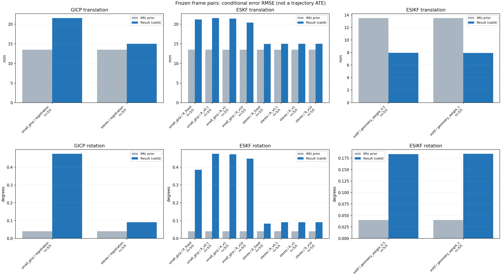

20261015_112659_forward · depth=disparity_cache · cache=ead80237a94ff12b4c9b
模型视差：/home/ubuntu22/slam/SIO_SLAM/models/tensorrt/disp_896x448_fp16.plan；engine SHA256=604cf6ac1f705c877260711730dd5d2d58c2a21f3020c03c668401ef7fb1e768。输入为生产裁剪与光照处理后的 RGB 0..255；此实验使用原始浮点像素视差，不应用完整前端的邻域视差后处理。
原始 ONNX SHA256：e9f49736a65d68d06681add463866b6defdf78fdd7f4f50f6cc941b682fdc0bc。
代价体图改写验证：ONNX Runtime 固定随机特征输入，最大绝对误差 0；该项检查图改写，完整模型精度仍需由录制数据评估。
配准代码版本：744ac2d993ae629b0cc44a3b1d995e04ab4fad48；观测生成版本：744ac2d993ae629b0cc44a3b1d995e04ab4fad48。
固定图像对与纯 IMU 先验；ESKF 回放固定 GICP 观测，ESIKF 直接读取点云。真值只用于此报告。
同时查看 converged 与 solver_status：上游默认 Stereo 在 max_iter / stopped_at_minimum 时也可能置 converged=true。valid 表示输入检查通过，不表示精度提升。欧氏 GICP 未提供独立的点距 RMSE，该列显示 NaN。
误差按每对图像的锚点计算，单位 m / degrees。此处 RMSE 不是全序列 ATE；末帧受同一锚点条件约束。NIS 与条件马氏距离是诊断量，少量相关图像对不能用于宣称协方差已校准。
全部指标 CSV · R / P / K 矩阵 CSV · Stereo 求解逐轮 CSV · ESIKF 逐轮 CSV · 配置快照 · 矢量图
| stage | method | variant | valid | total | translation RMSE (m) | rotation RMSE (deg) |
|---|---|---|---|---|---|---|
| esikf | esikf | geometry_weight_0.5 | 5 | 5 | 0.0079325 | 0.18377 |
| esikf | esikf | geometry_weight_1 | 5 | 5 | 0.0079269 | 0.18421 |
| eskf | small_gicp | R_fixed | 5 | 5 | 0.021167 | 0.38562 |
| eskf | small_gicp | R_x0.1 | 5 | 5 | 0.021555 | 0.47454 |
| eskf | small_gicp | R_x1 | 5 | 5 | 0.021428 | 0.47156 |
| eskf | small_gicp | R_x10 | 5 | 5 | 0.020409 | 0.44752 |
| eskf | stereo | R_fixed | 5 | 5 | 0.014966 | 0.083352 |
| eskf | stereo | R_x0.1 | 5 | 5 | 0.014984 | 0.091056 |
| eskf | stereo | R_x1 | 5 | 5 | 0.014984 | 0.091055 |
| eskf | stereo | R_x10 | 5 | 5 | 0.014984 | 0.091048 |
| gicp | small_gicp | registration | 5 | 5 | 0.021569 | 0.47489 |
| gicp | stereo | registration | 5 | 5 | 0.014984 | 0.091056 |

| stage | case | method | variant | status | solver_status | inliers | converged | covariance_convention | covariance_from_hessian | fitness | registration_rmse_m | prior_trans_error_m | result_trans_error_m | prior_rot_error_deg | result_rot_error_deg | R_rot_trace_rad2 | R_pos_trace_m2 | nis_regularized |
|---|---|---|---|---|---|---|---|---|---|---|---|---|---|---|---|---|---|---|
| gicp | static_start | small_gicp | registration | eligible | 18971 | 1 | right_source_body | 1 | 0.97547 | nan | 9.0452e-05 | 0.019704 | 0.0025908 | 0.28746 | 1.0636e-06 | 1.5459e-05 | nan | |
| gicp | static_start | stereo | registration | eligible | max_iter | 16842 | 1 | left_target_body | 1 | 0.86985 | 0.078183 | 9.0452e-05 | 0.0054165 | 0.0025908 | 0.051115 | 5.1629e-09 | 7.3518e-08 | nan |
| gicp | sync_motion | small_gicp | registration | eligible | 17092 | 1 | right_source_body | 1 | 0.92135 | nan | 0.0013397 | 0.026255 | 0.011322 | 0.56142 | 1.6305e-06 | 2.2058e-05 | nan | |
| gicp | sync_motion | stereo | registration | eligible | max_iter | 15514 | 1 | left_target_body | 1 | 0.83221 | 0.10423 | 0.0013397 | 0.0035598 | 0.011322 | 0.059656 | 5.9283e-09 | 8.9362e-08 | nan |
| gicp | main_motion | small_gicp | registration | eligible | 18289 | 1 | right_source_body | 1 | 0.8366 | nan | 0.0045997 | 0.021518 | 0.029347 | 0.30735 | 1.4859e-06 | 2.2973e-05 | nan | |
| gicp | main_motion | stereo | registration | eligible | max_iter | 15556 | 1 | left_target_body | 1 | 0.70935 | 0.13058 | 0.0045997 | 0.00097547 | 0.029347 | 0.04343 | 4.7819e-09 | 8.4301e-08 | nan |
| gicp | main_motion_long | small_gicp | registration | eligible | 15698 | 1 | right_source_body | 1 | 0.69837 | nan | 0.028091 | 0.0098636 | 0.084242 | 0.28817 | 1.7203e-06 | 2.618e-05 | nan | |
| gicp | main_motion_long | stereo | registration | eligible | max_iter | 13796 | 1 | left_target_body | 1 | 0.61098 | 0.14699 | 0.028091 | 0.032592 | 0.084242 | 0.13407 | 6.4807e-09 | 1.2354e-07 | nan |
| gicp | static_end | small_gicp | registration | eligible | 13258 | 1 | right_source_body | 1 | 0.88381 | nan | 0.0099324 | 0.026236 | 0.0040144 | 0.74314 | 2.7813e-06 | 3.309e-05 | nan | |
| gicp | static_end | stereo | registration | eligible | max_iter | 11625 | 1 | left_target_body | 1 | 0.77863 | 0.08572 | 0.0099324 | 0.0041666 | 0.0040144 | 0.12419 | 8.8153e-09 | 1.2167e-07 | nan |
| eskf | static_start | small_gicp | R_x0.1 | updated | 18971 | 1 | right_source_body | 1 | 0.97547 | nan | 9.0452e-05 | 0.019702 | 0.0025908 | 0.28745 | 1.0636e-07 | 1.5459e-06 | 0.058821 | |
| eskf | static_start | small_gicp | R_x1 | updated | 18971 | 1 | right_source_body | 1 | 0.97547 | nan | 9.0452e-05 | 0.019691 | 0.0025908 | 0.28735 | 1.0636e-06 | 1.5459e-05 | 0.058792 | |
| eskf | static_start | small_gicp | R_x10 | updated | 18971 | 1 | right_source_body | 1 | 0.97547 | nan | 9.0452e-05 | 0.01958 | 0.0025908 | 0.28636 | 1.0636e-05 | 0.00015459 | 0.058508 | |
| eskf | static_start | small_gicp | R_fixed | updated | 18971 | 1 | right_source_body | 1 | 0.97547 | nan | 9.0452e-05 | 0.018855 | 0.0025908 | 0.27593 | 0.00022846 | 0.0012 | 0.05556 | |
| eskf | static_start | stereo | R_x0.1 | updated | max_iter | 16842 | 1 | left_target_body | 1 | 0.86985 | 0.078183 | 9.0452e-05 | 0.0054165 | 0.0025908 | 0.051115 | 5.1629e-10 | 7.3518e-09 | 0.0037474 |
| eskf | static_start | stereo | R_x1 | updated | max_iter | 16842 | 1 | left_target_body | 1 | 0.86985 | 0.078183 | 9.0452e-05 | 0.0054164 | 0.0025908 | 0.051115 | 5.1629e-09 | 7.3518e-08 | 0.0037474 |
| eskf | static_start | stereo | R_x10 | updated | max_iter | 16842 | 1 | left_target_body | 1 | 0.86985 | 0.078183 | 9.0452e-05 | 0.0054163 | 0.0025908 | 0.051113 | 5.1629e-08 | 7.3518e-07 | 0.0037472 |
| eskf | static_start | stereo | R_fixed | updated | max_iter | 16842 | 1 | left_target_body | 1 | 0.86985 | 0.078183 | 9.0452e-05 | 0.0051901 | 0.0025908 | 0.04917 | 0.00022846 | 0.0012 | 0.0035044 |
| eskf | sync_motion | small_gicp | R_x0.1 | updated | 17092 | 1 | right_source_body | 1 | 0.92135 | nan | 0.0013397 | 0.026202 | 0.011322 | 0.56024 | 1.6305e-07 | 2.2058e-06 | 2.0258 | |
| eskf | sync_motion | small_gicp | R_x1 | updated | 17092 | 1 | right_source_body | 1 | 0.92135 | nan | 0.0013397 | 0.025737 | 0.011322 | 0.54994 | 1.6305e-06 | 2.2058e-05 | 1.9879 | |
| eskf | sync_motion | small_gicp | R_x10 | updated | 17092 | 1 | right_source_body | 1 | 0.92135 | nan | 0.0013397 | 0.02191 | 0.011322 | 0.46631 | 1.6305e-05 | 0.00022058 | 1.6777 | |
| eskf | sync_motion | small_gicp | R_fixed | updated | 17092 | 1 | right_source_body | 1 | 0.92135 | nan | 0.0013397 | 0.025281 | 0.011322 | 0.2241 | 0.00022846 | 0.0012 | 0.82176 | |
| eskf | sync_motion | stereo | R_x0.1 | updated | max_iter | 15514 | 1 | left_target_body | 1 | 0.83221 | 0.10423 | 0.0013397 | 0.0035598 | 0.011322 | 0.059655 | 5.9283e-10 | 8.9362e-09 | 0.013465 |
| eskf | sync_motion | stereo | R_x1 | updated | max_iter | 15514 | 1 | left_target_body | 1 | 0.83221 | 0.10423 | 0.0013397 | 0.0035596 | 0.011322 | 0.059653 | 5.9283e-09 | 8.9362e-08 | 0.013464 |
| eskf | sync_motion | stereo | R_x10 | updated | max_iter | 15514 | 1 | left_target_body | 1 | 0.83221 | 0.10423 | 0.0013397 | 0.0035583 | 0.011322 | 0.059631 | 5.9283e-08 | 8.9362e-07 | 0.013455 |
| eskf | sync_motion | stereo | R_fixed | updated | max_iter | 15514 | 1 | left_target_body | 1 | 0.83221 | 0.10423 | 0.0013397 | 0.0034498 | 0.011322 | 0.040155 | 0.00022846 | 0.0012 | 0.0058489 |
| eskf | main_motion | small_gicp | R_x0.1 | updated | 18289 | 1 | right_source_body | 1 | 0.8366 | nan | 0.0045997 | 0.021516 | 0.029347 | 0.30725 | 1.4859e-07 | 2.2973e-06 | 0.084437 | |
| eskf | main_motion | small_gicp | R_x1 | updated | 18289 | 1 | right_source_body | 1 | 0.8366 | nan | 0.0045997 | 0.0215 | 0.029347 | 0.30631 | 1.4859e-06 | 2.2973e-05 | 0.084158 | |
| eskf | main_motion | small_gicp | R_x10 | updated | 18289 | 1 | right_source_body | 1 | 0.8366 | nan | 0.0045997 | 0.021349 | 0.029347 | 0.29734 | 1.4859e-05 | 0.00022973 | 0.081471 | |
| eskf | main_motion | small_gicp | R_fixed | updated | 18289 | 1 | right_source_body | 1 | 0.8366 | nan | 0.0045997 | 0.021469 | 0.029347 | 0.25111 | 0.00022846 | 0.0012 | 0.067867 | |
| eskf | main_motion | stereo | R_x0.1 | updated | max_iter | 15556 | 1 | left_target_body | 1 | 0.70935 | 0.13058 | 0.0045997 | 0.00097546 | 0.029347 | 0.04343 | 4.7819e-10 | 8.4301e-09 | 0.00051966 |
| eskf | main_motion | stereo | R_x1 | updated | max_iter | 15556 | 1 | left_target_body | 1 | 0.70935 | 0.13058 | 0.0045997 | 0.00097547 | 0.029347 | 0.04343 | 4.7819e-09 | 8.4301e-08 | 0.00051966 |
| eskf | main_motion | stereo | R_x10 | updated | max_iter | 15556 | 1 | left_target_body | 1 | 0.70935 | 0.13058 | 0.0045997 | 0.00097554 | 0.029347 | 0.04343 | 4.7819e-08 | 8.4301e-07 | 0.00051961 |
| eskf | main_motion | stereo | R_fixed | updated | max_iter | 15556 | 1 | left_target_body | 1 | 0.70935 | 0.13058 | 0.0045997 | 0.0009787 | 0.029347 | 0.043175 | 0.00022846 | 0.0012 | 0.00042383 |
| eskf | main_motion_long | small_gicp | R_x0.1 | updated | 15698 | 1 | right_source_body | 1 | 0.69837 | nan | 0.028091 | 0.0098599 | 0.084242 | 0.28805 | 1.7203e-07 | 2.618e-06 | 0.080734 | |
| eskf | main_motion_long | small_gicp | R_x1 | updated | 15698 | 1 | right_source_body | 1 | 0.69837 | nan | 0.028091 | 0.0098261 | 0.084242 | 0.28705 | 1.7203e-06 | 2.618e-05 | 0.080462 | |
| eskf | main_motion_long | small_gicp | R_x10 | updated | 15698 | 1 | right_source_body | 1 | 0.69837 | nan | 0.028091 | 0.009504 | 0.084242 | 0.27748 | 1.7203e-05 | 0.0002618 | 0.077857 | |
| eskf | main_motion_long | small_gicp | R_fixed | updated | 15698 | 1 | right_source_body | 1 | 0.69837 | nan | 0.028091 | 0.0098572 | 0.084242 | 0.23511 | 0.00022846 | 0.0012 | 0.065078 | |
| eskf | main_motion_long | stereo | R_x0.1 | updated | max_iter | 13796 | 1 | left_target_body | 1 | 0.61098 | 0.14699 | 0.028091 | 0.032592 | 0.084242 | 0.13407 | 6.4807e-10 | 1.2354e-08 | 0.0093892 |
| eskf | main_motion_long | stereo | R_x1 | updated | max_iter | 13796 | 1 | left_target_body | 1 | 0.61098 | 0.14699 | 0.028091 | 0.032592 | 0.084242 | 0.13407 | 6.4807e-09 | 1.2354e-07 | 0.009389 |
| eskf | main_motion_long | stereo | R_x10 | updated | max_iter | 13796 | 1 | left_target_body | 1 | 0.61098 | 0.14699 | 0.028091 | 0.032593 | 0.084242 | 0.13406 | 6.4807e-08 | 1.2354e-06 | 0.0093877 |
| eskf | main_motion_long | stereo | R_fixed | updated | max_iter | 13796 | 1 | left_target_body | 1 | 0.61098 | 0.14699 | 0.028091 | 0.032601 | 0.084242 | 0.12036 | 0.00022846 | 0.0012 | 0.0077712 |
| eskf | static_end | small_gicp | R_x0.1 | updated | 13258 | 1 | right_source_body | 1 | 0.88381 | nan | 0.0099324 | 0.026233 | 0.0040144 | 0.74301 | 2.7813e-07 | 3.309e-06 | 0.11611 | |
| eskf | static_end | small_gicp | R_x1 | updated | 13258 | 1 | right_source_body | 1 | 0.88381 | nan | 0.0099324 | 0.026206 | 0.0040144 | 0.74204 | 2.7813e-06 | 3.309e-05 | 0.11596 | |
| eskf | static_end | small_gicp | R_x10 | updated | 13258 | 1 | right_source_body | 1 | 0.88381 | nan | 0.0099324 | 0.025944 | 0.0040144 | 0.73247 | 2.7813e-05 | 0.0003309 | 0.11444 | |
| eskf | static_end | small_gicp | R_fixed | updated | 13258 | 1 | right_source_body | 1 | 0.88381 | nan | 0.0099324 | 0.026219 | 0.0040144 | 0.70626 | 0.00022846 | 0.0012 | 0.11035 | |
| eskf | static_end | stereo | R_x0.1 | updated | max_iter | 11625 | 1 | left_target_body | 1 | 0.77863 | 0.08572 | 0.0099324 | 0.0041667 | 0.0040144 | 0.12419 | 8.8153e-10 | 1.2167e-08 | 0.0022487 |
| eskf | static_end | stereo | R_x1 | updated | max_iter | 11625 | 1 | left_target_body | 1 | 0.77863 | 0.08572 | 0.0099324 | 0.0041667 | 0.0040144 | 0.12419 | 8.8153e-09 | 1.2167e-07 | 0.0022487 |
| eskf | static_end | stereo | R_x10 | updated | max_iter | 11625 | 1 | left_target_body | 1 | 0.77863 | 0.08572 | 0.0099324 | 0.0041667 | 0.0040144 | 0.12419 | 8.8153e-08 | 1.2167e-06 | 0.0022486 |
| eskf | static_end | stereo | R_fixed | updated | max_iter | 11625 | 1 | left_target_body | 1 | 0.77863 | 0.08572 | 0.0099324 | 0.0041668 | 0.0040144 | 0.11982 | 0.00022846 | 0.0012 | 0.0021412 |
| esikf | static_start | esikf | geometry_weight_1 | updated | 17233 | 1 | 1 | 0 | 0 | 9.0452e-05 | 0.0045479 | 0.0025908 | 0.06263 | 1.0895e-07 | 8.6676e-07 | nan | ||
| esikf | static_start | esikf | geometry_weight_0.5 | updated | 17233 | 1 | 1 | 0 | 0 | 9.0452e-05 | 0.0045426 | 0.0025908 | 0.062609 | 2.1782e-07 | 1.7328e-06 | nan | ||
| esikf | sync_motion | esikf | geometry_weight_1 | updated | 16301 | 1 | 1 | 0 | 0 | 0.0013397 | 0.012158 | 0.011322 | 0.15601 | 1.129e-07 | 9.0009e-07 | nan | ||
| esikf | sync_motion | esikf | geometry_weight_0.5 | updated | 16305 | 1 | 1 | 0 | 0 | 0.0013397 | 0.01216 | 0.011322 | 0.15596 | 2.2566e-07 | 1.799e-06 | nan | ||
| esikf | main_motion | esikf | geometry_weight_1 | updated | 17242 | 1 | 1 | 0 | 0 | 0.0045997 | 0.0063984 | 0.029347 | 0.12127 | 9.7683e-08 | 9.9042e-07 | nan | ||
| esikf | main_motion | esikf | geometry_weight_0.5 | updated | 17243 | 1 | 1 | 0 | 0 | 0.0045997 | 0.0063929 | 0.029347 | 0.12127 | 1.9513e-07 | 1.9771e-06 | nan | ||
| esikf | main_motion_long | esikf | geometry_weight_1 | updated_not_converged | 15513 | 0 | 1 | 0 | 0 | 0.028091 | 0.0085014 | 0.084242 | 0.23369 | 1.243e-07 | 1.2024e-06 | nan | ||
| esikf | main_motion_long | esikf | geometry_weight_0.5 | updated_not_converged | 15518 | 0 | 1 | 0 | 0 | 0.028091 | 0.0085237 | 0.084242 | 0.23276 | 2.4851e-07 | 2.4094e-06 | nan | ||
| esikf | static_end | esikf | geometry_weight_1 | updated | 12315 | 1 | 1 | 0 | 0 | 0.0099324 | 0.0056974 | 0.0040144 | 0.2685 | 2.1026e-07 | 1.2878e-06 | nan | ||
| esikf | static_end | esikf | geometry_weight_0.5 | updated | 12315 | 1 | 1 | 0 | 0 | 0.0099324 | 0.0057102 | 0.0040144 | 0.26783 | 4.2033e-07 | 2.5748e-06 | nan |